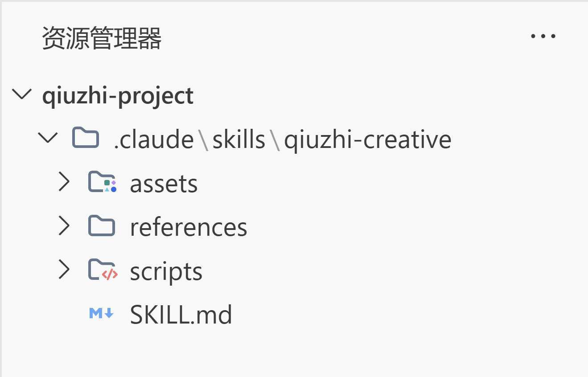

【前置】安装Claude Code（Windows）
步骤一、官方提供了几种下载的方式，这里选择windows的powershell

管理员运行Powershell，输入下面指令
|
|
安装完成以后（安装过程可能需要开梯子，我是开梯子安装的）会看到下面的指令：
|
|
这里提示了but C:\Users\Lzh\.local\bin is not in your PATH.，显示环境变量没加，根据后面的提示添加环境变量
如果 Windows 安装后若提示找不到 claude 命令，通常是环境变量问题
步骤二、测试claude命令
随便打开一个终端，输入 claude 命令测试一下安装效果，如果是这样子的就说明安装成功了

然后先选择2退出，因为各种原因，国内无法使用claude原生的模型，因此我们选择minimax的供应商，minimax原生支持anthropic协议，对claude支持会比较好。
步骤三、申请 Minimax 的API Key
来到minimax的开发者平台 https://platform.minimaxi.com/docs/api-reference/api-overview
订阅并获取一个token plan的key

步骤四、下载CC-switch
CC-Switch 是一个用于切换 Claude Code 供应商（如官方、GLM、DeepSeek）的工具。https://github.com/farion1231/cc-switch/releases
安装完后配置：
- 必须先添加一个官方供应商（即使没账号），否则可能出错。
- 添加第三方供应商（如Minimax），输入 API Key。
- 点击「启用」你想要的供应商。


步骤五、测试
添加并启用供应商以后，来到vscode随便打开一个工作文件夹，创建一个新的终端，输入 claude

显示模型为MiniMax-M2.7，并且可以成功调用，说明已经配置好了
什么是Skill？
一句话总结：Skill就是封装好的标准化工作流 / 专业知识（Markdown + 脚本），告诉 AI “按什么步骤、规范、逻辑” 完成任务
一个skill的目录结构一般长这样：

|
|
基本上一个skill都包含这些文件：
- SKILL.md：存放描述Skill的元信息，告诉agent应该怎么使用这个skill
- scripts：存放执行脚本，agent一般是不会看里面的具体实现的
- references：参考文档，在SKILL.md写的操作指南中，会引导ai根据不同的需求情况来参考references下的文档，所以这里面放的文档可以进一步的细分（SKILL.md教ai怎么使用skill，references的md提供具体使用案例供ai参考）
- assets：也是存放参考资产的目录（可以放图片、json、html）来进一步约束skill的使用
SKILL.md 详解
SKILL.md 是 Skill 的核心入口文件，agent 会读取这个文件来理解如何使用这个技能。
基本结构
|
|
关键字段
- name：Skill 的名称，使用 kebab-case 命名
- description：简短描述，用于 agent 判断何时调用此技能
- When to Use：触发条件，告诉 agent 在什么情况下使用
- How to Use：具体使用方法
编写技巧
- description 要具体：让 agent 能准确判断是否需要调用
- When to Use 要清晰：列出具体的触发场景
- How to Use 要详细：包含命令、参数、示例
创建自己的 Skill
需求分析
在创建之前，先问自己：
- 这个 Skill 解决什么问题？
- 什么时候应该调用它？
- 需要哪些输入和输出？
目录结构
|
|
编写 SKILL.md
|
|
部署 Skill
将完整的 Skill 目录放入 Claude Code 的 skills 目录：
- Windows:
C:\Users\<用户名>\.claude\skills\ - macOS/Linux:
~/.claude/skills/
放入后重启 Claude Code 即可使用。
常用 Skill 推荐
- paper-2-web：将论文转换为网站/海报/视频
- simplify：代码优化和重构
- planning-with-files：基于文件的复杂任务规划
- docx：Word 文档处理
- xlsx：Excel 表格处理
- pdf：PDF 文档处理